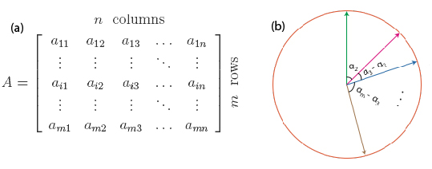
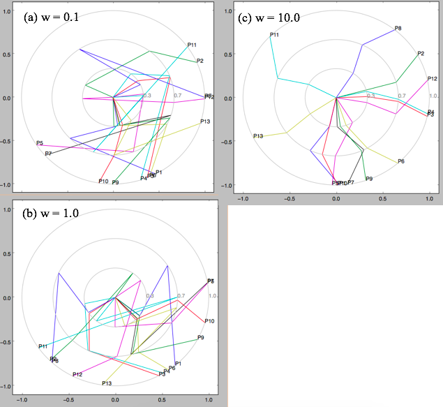

Assuming High dimensional data has m instances and n attributes (Fig. 1.a), and can be represented by a m-by-n matrix. The
n attributes is mapped to a 2D star coordinates (Fig. 1.b) using the following metric. Here, the pair-wise coorelation (C
ij) of attributes in HD space is meant to be preserved in 2D space, represented by cos(α
ij), meaning minimizing |C
ij - cos(α
ij)|.

Fig. 1: (a) HD space data represented by m-by-n matrix. (b) Each arrow in star coordinate represent an attribute.
In the JellyFish approach, data are clustered first (say z clusters), and different optimized angles are obtained for different clusters. The final layout is like a JellyFish. A global term with weight is also added to stretch the hands of the
JellyFish . Then final form including the local and global terms, which is to be minized, is:
Here, the subscript i denotes cluster number; j and k denotes attribute number. This term is then optimized/minimized using one quasi Newton's method, the BFGS method. The JellyFish layout with different global weight term is shown in Fig. 2. Data used in this figure is the
Wine Dataset from UCI Machine Learning Repository. The data has 13 attributes and partitioned into 3 clusters using t-SNE.

Fig. 2: JellyFish layout for Wine dataset with different global weights.
Due to non-efficiency the optimization method, this approach is not integrated as a web application. Instead, its similar but briefer version without using iterative optimization method is presented in
HalfCircle.